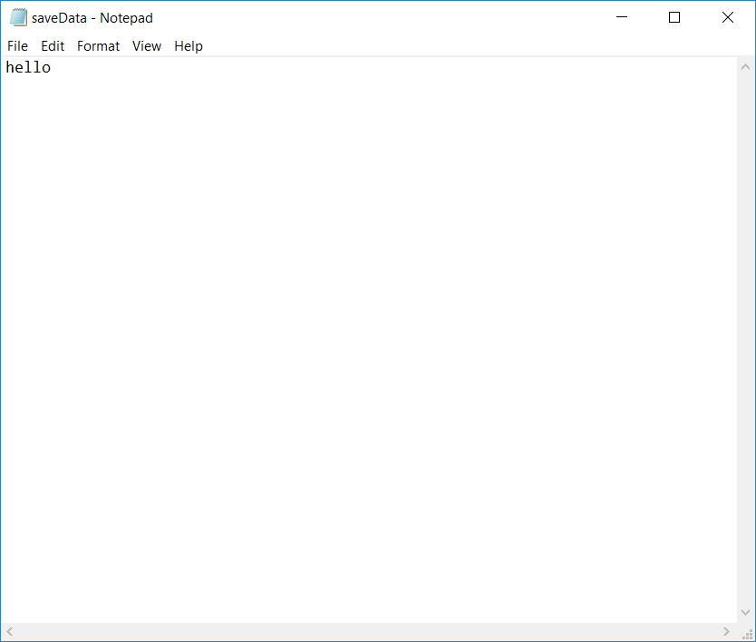
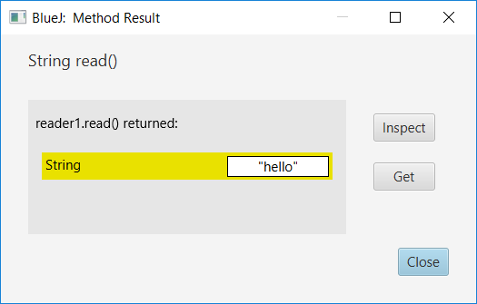
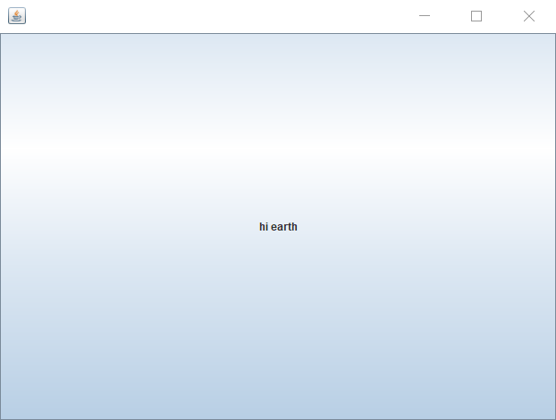

Learning to code video games in Java using the interwebs can be intimidating and confusing. Tutorials for the different skills needed
are scattered across the internet, and more often than not they do not pertain to the subject in question.
Using all the skills I've learnt, I made this tutorial to get straight to the point about making java apps using
GUIs and Action Events. This tutorial assumes the reader has a good knowledge of objects and methods.
Examples throughout the tutorial will focus only on making classes. To run them as programs, you can create test instances in IDEs or create a main method at the end of the root class to initialise it. Eg:
public static void main(String [] args)
{ //with the example of a GUI from chapters 1-5 GUI testGUI = new GUI();
}
The first chapter (0.5) will take you through writing and reading text files to save values to be used in game. Following this, chapters 1 through 5 will see
us programming a frame to display animations and take inputs to interact with them.
So you've learnt object-oriented programming and computing numbers, and around this time you may be asking yourself: "How can I save these amazing calculations?" looks like you need some java.io!
Here's a rough breakdown of what you'll need from the package:
File
FileReader
BufferedReader
FileWriter
BufferedReader
Though you could always just do a import java.io.*; to get everything you need.
To write files, you first need to create a text file to which we will write to. The file will then be wrapped in a FileWriter to write to the file, the FileWriter itself being wrapped in a BufferedWriter that will do the work of updating the file for us. Quite a bit of wrapping if I'd say so myself.
import java.io.*;
class Writer
{ //Declare the objects required
File file;
FileWriter fileWriter;
BufferedWriter bufferedWriter;
//The write method takes in a string
public void write(String textIn)
{
//File is initialised as saveData.txt
file = new File("saveData.txt");
//All writers & readers need to catch IOException, so try-catch is used
try
{
//Initisalised fileWriter is wrapped in a bufferedWriter. The bufferedWriter then writes the desired text.
fileWriter = new FileWriter(file);
bufferedWriter = new BufferedWriter(fileWriter);
bufferedWriter.write(textIn);
//Close the file
bufferedWriter.close();
}
catch(IOException ioe){}
}
}
Once this is done, it's simply a case of creating an instance of the writer and running the write method with a String of your choice. Here's the result of one I did with the words "hello".

The code for a File Reader is very much the same, except it returns a String instead of taking in an argument of one. Let's make a new class of Reader in the same project to see if the writer worked.
import java.io.*;
class Reader
{
File file;
FileReader fileReader;
BufferedReader bufferedReader;
//String result is declared. This will be returned later
String result;
public String read()
{ //The same file name is used so we can read what was written earlier
file = new File("saveData.txt");
try
{
//Similar sequence to earlier, except the word write is replaced with read
fileReader = new FileReader(file);
bufferedReader = new BufferedReader(fileReader); //Set result to the next line read by the reader
result = bufferedReader.readLine();
//Return the result set by the reader
return result;
}
}
Reading the file you've written earlier, you should get something like this:

With the power file readers and writers, you can now save values such as usernames, level information and even player position! This will all be easily accessible through the text file saved in the program's location, while information could be encrypted to prevent users from tampering with it.
We find ourselves at step one of making a game- the screen. It may not seem so, but making the screen was one of the more daunting things about java when I first tried (and failed) to do this a couple of years ago. This was because I had always thought of the screen as a blank slate for pixels to be placed upon, however the swing packages follow a framework that makes it easier for developers to create applications rather than drawings.
Instead, we have swing, a tool for Java developers to create apps using the language. We'll first make a GUI using swing through import javax.swing.JFrame; , then add a button to see how the package works. Here's the code to make a simple blank frame:
//Import the object for use in Java
import javax.swing.JFrame;
class GUI
{
public GUI()
{ //creates a frame of size 640x480 and makes it visible
JFrame frame = new JFrame();
frame.setSize(640,480);
frame.setVisible(true);
}
}
Compile the code, create a new instance of GUI and you should get a 640px by 480px screen! Easy enough, now let's add the button.
import javax.swing.JFrame; //Import the button import javax.swing.JButton;
class GUI
{
public GUI()
{
JFrame frame = new JFrame();
frame.setSize(640,480);
//Creates a new button containing the words "hi earth" and adds it to the frame
JButton button = new JButton("hi earth");
frame.add(button);
frame.setVisible(true);
}
}

Now if you'll notice, the button takes up the entirety of the screen. This shows how swing containers work, as swing objects take up the full width of their parents when added without a layout.
So we've made a screen with a button on it. That's kinda cool right? But hey, we really want our own graphics on the screen if we're making a game.
To do this, we'll need to override the paint method in our Jframe.
While we're at it, let's turn our GUI into the JFrame itself by "extending" it.
public class GUI extends JFrame;
Once overridden, we can use the Graphics2D library to draw a myriad of shapes to our heart's content
//Make the GUI an extension of JFrame
class GUI extends JFrame
{
public GUI()
{
//Since GUI is a frame, methods are called locally
setSize(640,480);
setVisible(true);
}
//Override the paint function
public void paint(Graphics g)
{ //Cast the graphics as an awt Graphics2D object, using it to draw a square and a line
Graphics2D g2d = (Graphics2D)g;
g2d.fillRect(200,200,50,50);
g2d.drawLine(50,50,200,400);
}
}
Great! We've drawn a square and a line. Now this magnificent piece of abstract art may not look like much, but it represents something bigger
than itself; with enough of these shapes, we have the power to form images more complex than its individual parts. Emergence!
Now that we're able to draw shapes, we're going to want them to move; the game wouldn't be very interactive otherwise. To achieve this, we can make use of the
Timer object included in the javax swing package. The timer comprises of an action listener that calls a method at regular set time intervals, meaning we could
simply tell the GUI to repaint its graphics every few dozen milliseconds or so.
Timer timer = new Timer("few dozen milliseconds", new ActionListener());
At this point you may be asking yourself, what's an ActionListener? The ActionListener is a class in the awt package that "listens" for a certain action to be performed, e.g. the timer goes off. When the action is performed, a set of instructions can be carried out by the program in the actionPerformed method within the class.
To make it do what we want, we'll need to override the actionPerformed method of the class and set our own instructions.
class GUI extends JFrame
{ private int squareX;
public GUI()
{
squareX = 0;
setSize(640,480);
setVisible(true); //Creates a timer of interval 0.5 seconds and a listener that calls a method when it goes off
Timer timer = new Timer(500,new FrameSkip());
timer.start();
}
public void paint(Graphics g)
{
Graphics2D g2d = (Graphics2D)g; //square drawn at x-coordinates of squareX, which increases by ten each paint()
g2d.fillRect(squareX,200,10,10);
squareX += 10;
}
//Overriding the actionPerformed method using a new class that implements ActionListener.
Every time the timer goes off, actionPerformed() repaints the frame
public class FrameSkip implements ActionListener
{
public void actionPerformed(ActionEvent event)
{
repaint();
}
}
}
We have now achieved movement. You may realise, however, that a line is slowly drawn across the screen despite specifying to draw a box.
This is because we haven't cleared the previous box from the frame, and so it simply stays on the screen. To get around this, we'll paint over the screen
with white as a means of "refreshing" the frame. We can do this by importing Color from awt and setting the g2d's colour.
import java.awt.Color;
//place this in the paint() method g2d.setColor(Color.WHITE);
g2d.fillRect(0,0,640,480); g2d.setColor(Color.BLACK);
g2d.fillRect(squareX,200,10,10);
With our moving box from the last section, all we need to do is add player input to make the program interactive. To achieve this, we'll be using another kind of ActionListener, namely a KeyListener. Adding this to the GUI will tell the program to "listen" for a key press, firing an actionPerformed method whenever it finds that the user has done so. Using the actionPerformed method, we can check which key was pressed through event.getKeyCode() and modify the player speed accordingly.
//Tells the application to exit when the GUI close button is pressed
setDefaultCloseOperation(JFrame.EXIT_ON_CLOSE); //We've changed the interval to 50 to increase responsiveness
Timer timer = new Timer(50,new FrameSkip());
timer.start(); //A Keylistener is added, with a new overridden KeyListener
addKeyListener(new KeyListener()
{ //If the left arrow key is pressed, speed is -10. If the right one is pressed, speed is 10.
public void keyPressed(KeyEvent event)
{
if(event.getKeyCode() == 39)
rightSpeed = 10;
else if(event.getKeyCode() == 37)
leftSpeed = -10;
} //When either keys are released, speed is set to zero.
public void keyReleased(KeyEvent event)
{
if(event.getKeyCode() == 39)
rightSpeed = 0;
else if(event.getKeyCode() == 37)
leftSpeed = 0;
} //The last method is overridden with an empty method; all three need to be overridden.
public void keyTyped(KeyEvent event){}
});
}
public void paint(Graphics g)
{
Graphics2D g2d = (Graphics2D)g; //"Refreshing" the screen.
//Every time the timer goes off, actionPerformed() repaints the frame
public class FrameSkip implements ActionListener
{
public void actionPerformed(ActionEvent event)
{ //This line will add both speeds set above to the square's x-coordinates to simulate movement. squareX += rightSpeed + leftSpeed; //The change in coordinates is then painted
repaint();
}
}
}
Use the arrow keys or press the buttons to move
Congratulations, we now have a game! Technically. With player input down, it is just a case of adding more methods and hit detection to make gameplay a reality.
Finally, we'll be adding an enemy to our game, in the form of a gray box that moves downwards towards the player. Whenever the enemy reaches the bottom of the screen, we'll reset its y-coordinates back to the top, and give it a random x-coordinate through Math.random()*640 to vary player reaction. A new check will be placed in the timer ActionListener called gameOver, which makes it that player and enemy coordinates can only be updated if the game is not over. The gameOver boolean itself will be triggered by collision detection between the two objects, as their coordinates are checked for intersection at every frame skip.
class GUI extends JFrame
{
private int squareX;
private int rightSpeed;
private int leftSpeed;
//Declaring enemy coordinates and a boolean to signify if the player has lost, gameOver.
private boolean gameOver;
private int enemyx;
private int enemyy;
//Draws the enemy on the screen
g2d.setColor(Color.decode("#CCCCCC"));
g2d.fillRect(enemyx,enemyy,40,40);
}
public class FrameSkip implements ActionListener
{
public void actionPerformed(ActionEvent event)
{ //only does calculations and repaints image if game is not over
if(!gameOver)
{ //update the coordinates of the player and enemy.
squareX += rightSpeed + leftSpeed;
enemyy += 10; //If the coordinates of the player and the enemy intersect, the game is over.
if(420>enemyy && 360<enemyy && squareX+20>enemyx && squareX<enemyx+40)
gameOver = true; //otherwise, if player is below the visible screen;
else if(enemyy == 480)
{ //reset enemy to top of screen and give it a new random x coordinate
enemyy = -40;
enemyx = (int)(Math.random()*640);
}
repaint();
}
}
}
}
Use the arrow keys or press the buttons to move
As shown in the example, hit detection between game objects is simply done through a series of calculations to check if their coordinates are intersecting at any point. Calculations can be expanded to include barriers, projectiles and pick-ups to increase the scope of the game. Intricate animations could also be played by cycling through different coordinates or drawings in an array each time the timer goes off, possibly through a new paint function like paintEnemy(Graphics2D g2d).
Outsourcing player and enemy calculations and drawings to individual classes would be a good next step towards understanding the connectivity of objects and strengthening object-orientated programming skills.
With knowledge of the fundamentals of video games, you're now ready to start making games in java! I feel that learning to code in-game animation, hit detection and interactivity from scratch uncovered the endless creative possibilities offered by computer programming, thinking gameplay could only be achieved through dedicated development software. Java has given me a better picture of what game design may have been like in its beginnings, and made me appreciate the streamlined software we have access to today.